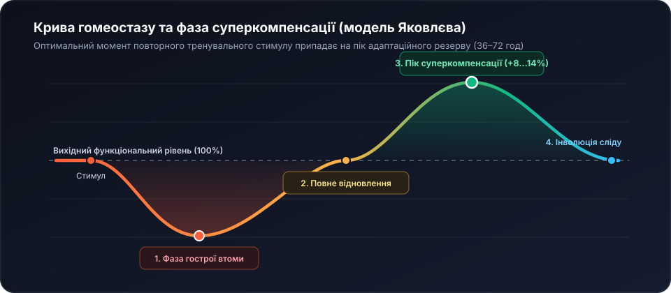

1. Від хаотичної втоми до керованої суперкомпенсації
Найпоширеніша помилка більшості відвідувачів залів — ототожнення крайнього виснаження з ефективністю тренування. З погляду фізіології спорту тренувальна сесія є лише контрольованим катаболічним стимулом, який тимчасово знижує працездатність організму. Реальне зростання сили, щільності міофібрил та ударного об’єму серця відбувається виключно у фазі відновлення та суперкомпенсації.

Атлет А тренує жим штанги лежачи тричі на тиждень до повної м’язової відмови (RPE 10) — через хронічне перевантаження мотонейронів ЦНС робоча вага падає з 90 кг до 82,5 кг. Атлет Б працює із запасом у 2 повторення (RIR 2 / RPE 8): важка сесія у понеділок (85% 1ПМ) та швидкісно-технічна у четвер (72% 1ПМ). За 8 тижнів його результат зростає з 90 кг до 102,5 кг.
2. Пульсові зони інтенсивності та точний розрахунок за Карвоненом
Спрощена формула «220 мінус вік» дає похибку до ±12 ударів за хвилину, оскільки ігнорує тренованість міокарда у спокої. У клубі APEX ми застосовуємо рівняння Танаки для максимальної ЧСС у поєднанні з методом резерву пульсу Карвонена.
HR_reserve (резерв ЧСС) = HR_max − HR_спокою
Цільовий пульс зони = HR_спокою + (HR_reserve × Коефіцієнт інтенсивності)
Дано: вік = 20 років; ранковий пульс у спокої = 56 уд/хв; цільовий коридор Зони 2 = 60%–70%.
1. Максимум за Танакою: 208 − (0,7 × 20) = 194 уд/хв.
2. Резерв пульсу: 194 − 56 = 138 уд/хв.
3. Нижня межа (60%): 56 + (138 × 0,60) ≈ 139 уд/хв • Верхня межа (70%): 56 + (138 × 0,70) ≈ 153 уд/хв.
Висновок: персональний коридор окиснення жирів становить 139–153 уд/хв.
| Зона ЧСС | % від резерву | Лактат крові | Основне паливо | Внесок жирів | Тривалість |
|---|---|---|---|---|---|
| Z1 • Активна регенерація | 50–60% | < 1,5 ммоль/л | Вільні жирні кислоти | 85% |
30–90 хвилин |
| Z2 • Аеробний фундамент | 60–70% | 1,5–2,0 ммоль/л | Жири + м’язовий глікоген | 68% |
40–120 хвилин |
| Z3 • Аеробно-темпова | 70–80% | 2,1–3,8 ммоль/л | Глікоген + тригліцериди | 38% |
20–45 хвилин |
| Z4 • Анаеробний поріг | 80–90% | 4,0–6,5 ммоль/л | Анаеробний гліколіз | 12% |
Інтервали по 3–8 хв |
| Z5 • Нейром’язовий пік | 90–100% | > 8,0 ммоль/л | Креатинфосфат + глюкоза | 3% |
Спринти по 15–60 с |
3. Потрійна інтерактивна лабораторія APEX RS3
У збірці v3.1 RS3 обчислювальний блок поєднує три живі калькулятори: пульсові коридори Карвонена, силовий максимум 1ПМ за Еплі та добову матрицю калорій і нутрієнтів КБЖВ за рівнянням Міффліна — Сан-Жеора.
1. Пульсові зони Карвонена
Максимум ЧСС: 194 уд/хв
2. Силовий максимум (1ПМ)
Розрахунковий 1ПМ: 96.0 кг
3. Калькулятор добової енергії TDEE, балансу КБЖВ та води
4. Хвильова періодизація (DUP) та приклади силової прогресії
Лінійне додавання ваги щотижня працює лише на початковому етапі. Для стабільного багаторічного росту ми застосовуємо щоденну хвильову періодизацію (DUP), змінюючи обсяг, інтенсивність та швидкість руху снаряда в межах 4-тижневого мезоциклу.

Задаємо цільовий коридор 4 підходи по 6–8 повторень:
• Тиждень 1: 85 кг × 6, 6, 6, 6 (RPE 7.5) → Тиждень 2: 85 кг × 7, 7, 7, 6 → Тиждень 3: 85 кг × 8, 8, 8, 8 (коридор закрито!) → Тиждень 4: перехід на 90 кг × 6, 6, 6, 6.
| Етап мезоциклу | Підходи × Повт. | % від 1ПМ | Робоча вага | Сумарний тоннаж | Важкість RPE |
|---|---|---|---|---|---|
| Тиждень 1 • Втягувальний обсяг | 4 × 8 повторень | 72,5% | 72,5 кг | 2 320 кг |
RPE 7.5 |
| Тиждень 2 • Силова гіпертрофія | 5 × 6 повторень | 77,5% | 77,5 кг | 2 325 кг |
RPE 8.0 |
| Тиждень 3 • Піковий стимул сили | 5 × 4 повторення | 85,0% | 85,0 кг | 1 700 кг |
RPE 9.0 |
| Тиждень 4 • Активний Deload | 3 × 6 повторень | 65,0% | 65,0 кг | 1 170 кг |
RPE 6.0 |
5. Вибір оптимальної тренувальної архітектури на тиждень
Для стабільного синтезу м’язового білка кожну велику групу м’язів варто навантажувати двічі на тиждень сумарним обсягом 10–18 робочих підходів. Зіставте основні архітектури сплітів у таблиці нижче.

| Назва архітектури | Днів / тиждень | Частота на м’яз | Кому підходить найкраще | Баланс відновлення |
|---|---|---|---|---|
| Full Body (Усе тіло за сесію) | 3 дні (Пн, Ср, Пт) | 3 рази / тиждень | Початківці, студенти та ІТ-фахівці | 94% |
| Upper / Lower (Верх / Низ) | 4 дні (Пн, Вт, Чт, Пт) | 2 рази / тиждень | Середній та просунутий рівень сили | 91% |
| Hybrid Athlete (Сила + Плавання/Біг) | 4–5 днів | 2 силові + 2 аеробні | Універсальна функціональна форма | 88% |
| Push / Pull / Legs (Тягни-Штовхай-Ноги) | 5–6 днів | 2 рази / тиждень | Досвідчені атлети з високим ресурсом сну | 72% |